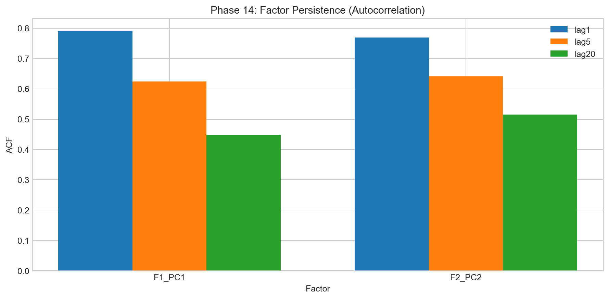
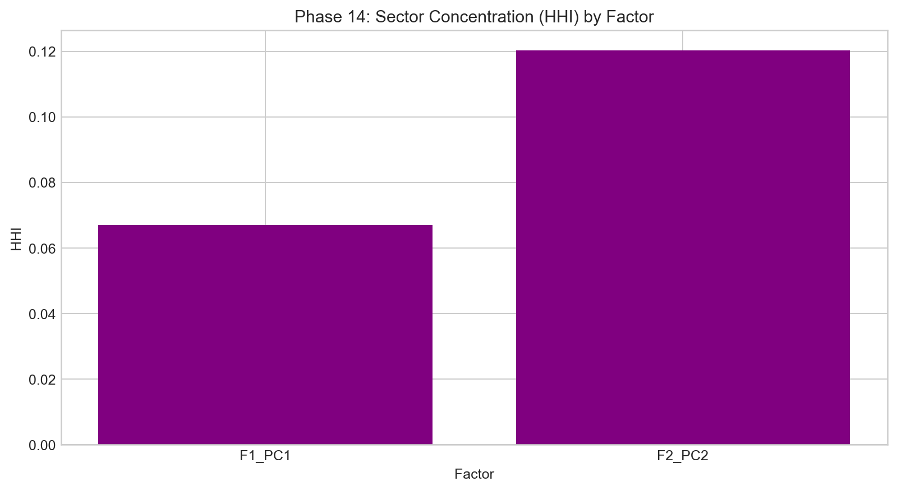

Factor Interpretation
Entry: after extraction, I had to decide what each retained mode actually means.
I try to keep interpretation grounded. I do not name a factor unless behavior supports it in three ways: loading concentration pattern, time-series behavior, and relationship to market proxy variables. If one of the three fails, I tag that factor as unstable/tactical and move on.
The strongest pattern in this project is still the first mode acting like the systemic volatility backbone. The second mode carries useful structure but rotates more and is less reliable as a permanent “anchor.” I saw that in loading concentration metrics, overlap drift, and split tests.





My notebook-style takeaway
I treat PC1 as structural and PC2 as conditional. That one sentence has saved me from over-claiming multiple times. It keeps the model useful and honest at the same time.


Shared reference
Dictionary: same terminology map used in every page.